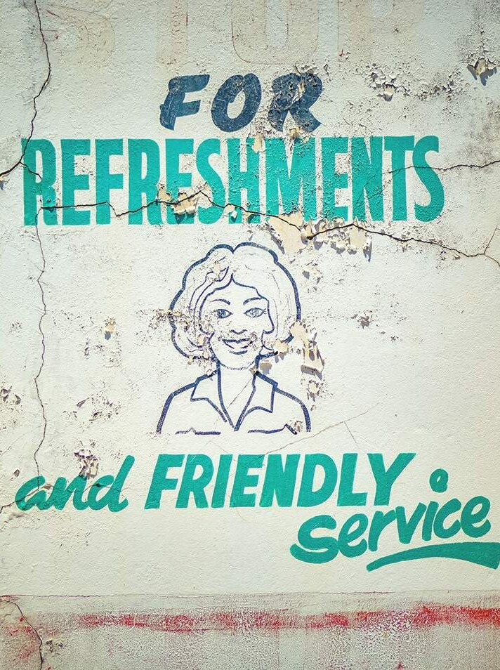

A Creative Studio &
Project Incubator
We design, curate, and build cultural archives and visual narratives that connect communities.
Featured Projects

Identity Tapestry
A collective portrait of the Mount Lawley Senior High School community. Over 580 unique hand-drawn vectors representing fragments of identity, compiled into an interactive archive.
Explore Archive →Erebor
An environmental AI agent designed to personify a building, integrating sensory data, historical memory, and interactive chat API capabilities.
Chat with Erebor →About
CORNER DELI is a multi-disciplinary practice based in Western Australia. We collaborate with schools, community groups, and cultural institutions to capture visual records of contemporary life.